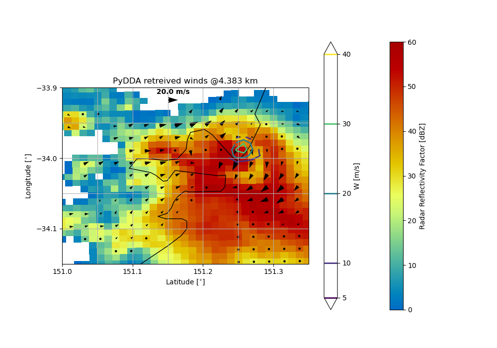
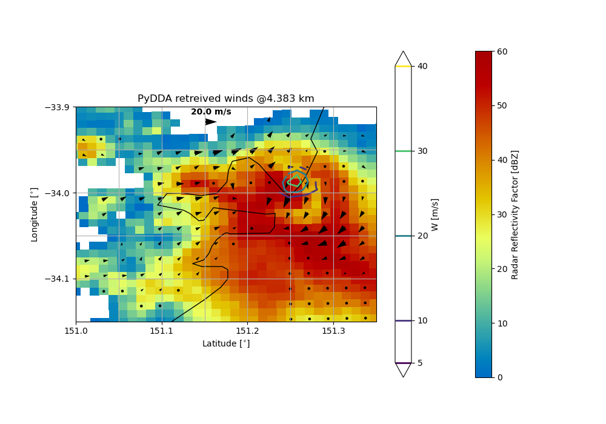

Note
Go to the end to download the full example code
Example of a wind retrieval in a tornado over Sydney#
This shows an example of how to retrieve winds from 4 radars over Sydney.
We use smoothing to decrease the magnitude of the updraft in the region of the mesocyclone. The reduction of noise also helps the solution converge much faster since the cost function is smoother and therefore less susecptible to find a local minimum that is in noise.
The observational constraint is reduced to 0.01 from the usual 1because we are factoring in many more data points as we are using 4 radars instead of the two in the Darwin example.
This example uses pooch to download the data files.
 
/usr/share/miniconda3/envs/pydda-docs/lib/python3.11/site-packages/pyart/io/cfradial.py:408: UserWarning: WARNING: valid_min not used since it
cannot be safely cast to variable data type
data = self.ncvar[:]
/usr/share/miniconda3/envs/pydda-docs/lib/python3.11/site-packages/pyart/io/cfradial.py:408: UserWarning: WARNING: valid_max not used since it
cannot be safely cast to variable data type
data = self.ncvar[:]
Calculating weights for radars 0 and 1
Calculating weights for radars 0 and 2
Calculating weights for radars 0 and 3
Calculating weights for radars 1 and 0
Calculating weights for radars 1 and 2
Calculating weights for radars 1 and 3
Calculating weights for radars 2 and 0
Calculating weights for radars 2 and 1
Calculating weights for radars 2 and 3
Calculating weights for radars 3 and 0
Calculating weights for radars 3 and 1
Calculating weights for radars 3 and 2
Calculating weights for models...
Points from Radar 0: 68927
Points from Radar 1: 82785
Points from Radar 2: 64605
Points from Radar 3: 64959
Starting solver
rmsVR = 7.24225
Total points: 281276
The max of w_init is 0.0
Nfeval | Jvel | Jmass | Jsmooth | Jbg | Jvort | Jmodel | Jpoint | Max w
0|2864.7900| 0.0000| 0.0000| 0.0000| 0.0000| 0.0000| 0.0000| 0.0000
The gradient of the cost functions is 1.5443492
Nfeval | Jvel | Jmass | Jsmooth | Jbg | Jvort | Jmodel | Jpoint | Max w
10| 160.7619| 84.6624| 0.0000| 0.0000| 0.0000| 0.0000| 0.0000| 19.8056
The gradient of the cost functions is 0.11083612
Nfeval | Jvel | Jmass | Jsmooth | Jbg | Jvort | Jmodel | Jpoint | Max w
20| 67.2361| 40.4497| 0.0000| 0.0000| 0.0000| 0.0000| 0.0000| 43.9986
The gradient of the cost functions is 0.046650108
Nfeval | Jvel | Jmass | Jsmooth | Jbg | Jvort | Jmodel | Jpoint | Max w
30| 74.9020| 31.8725| 0.0000| 0.0000| 0.0000| 0.0000| 0.0000| 87.2355
The gradient of the cost functions is 0.16772412
Nfeval | Jvel | Jmass | Jsmooth | Jbg | Jvort | Jmodel | Jpoint | Max w
40| 53.7402| 21.6132| 0.0000| 0.0000| 0.0000| 0.0000| 0.0000| 88.5672
The gradient of the cost functions is 0.039173346
Nfeval | Jvel | Jmass | Jsmooth | Jbg | Jvort | Jmodel | Jpoint | Max w
50| 49.7931| 17.5485| 0.0000| 0.0000| 0.0000| 0.0000| 0.0000| 106.1468
The gradient of the cost functions is 0.023509862
Nfeval | Jvel | Jmass | Jsmooth | Jbg | Jvort | Jmodel | Jpoint | Max w
60| 50.2131| 16.8178| 0.0000| 0.0000| 0.0000| 0.0000| 0.0000| 145.9839
The gradient of the cost functions is 0.09374788
Nfeval | Jvel | Jmass | Jsmooth | Jbg | Jvort | Jmodel | Jpoint | Max w
70| 45.3509| 13.8503| 0.0000| 0.0000| 0.0000| 0.0000| 0.0000| 153.9240
The gradient of the cost functions is 0.0270204
Nfeval | Jvel | Jmass | Jsmooth | Jbg | Jvort | Jmodel | Jpoint | Max w
80| 43.1789| 12.4852| 0.0000| 0.0000| 0.0000| 0.0000| 0.0000| 176.4540
The gradient of the cost functions is 0.01770663
Nfeval | Jvel | Jmass | Jsmooth | Jbg | Jvort | Jmodel | Jpoint | Max w
90| 42.9505| 12.1104| 0.0000| 0.0000| 0.0000| 0.0000| 0.0000| 211.0335
The gradient of the cost functions is 0.07380735
Nfeval | Jvel | Jmass | Jsmooth | Jbg | Jvort | Jmodel | Jpoint | Max w
100| 40.3303| 10.7333| 0.0000| 0.0000| 0.0000| 0.0000| 0.0000| 221.5478
The gradient of the cost functions is 0.022351442
Nfeval | Jvel | Jmass | Jsmooth | Jbg | Jvort | Jmodel | Jpoint | Max w
110| 38.8249| 9.8692| 0.0000| 0.0000| 0.0000| 0.0000| 0.0000| 247.0872
The gradient of the cost functions is 0.015094841
Nfeval | Jvel | Jmass | Jsmooth | Jbg | Jvort | Jmodel | Jpoint | Max w
120| 38.3343| 9.8641| 0.0000| 0.0000| 0.0000| 0.0000| 0.0000| 308.7439
The gradient of the cost functions is 0.06109773
Nfeval | Jvel | Jmass | Jsmooth | Jbg | Jvort | Jmodel | Jpoint | Max w
130| 36.4593| 8.8712| 0.0000| 0.0000| 0.0000| 0.0000| 0.0000| 331.2393
The gradient of the cost functions is 0.019810995
Nfeval | Jvel | Jmass | Jsmooth | Jbg | Jvort | Jmodel | Jpoint | Max w
140| 35.1107| 8.4133| 0.0000| 0.0000| 0.0000| 0.0000| 0.0000| 387.6576
The gradient of the cost functions is 0.013441319
Nfeval | Jvel | Jmass | Jsmooth | Jbg | Jvort | Jmodel | Jpoint | Max w
150| 34.4118| 8.5971| 0.0000| 0.0000| 0.0000| 0.0000| 0.0000| 470.7526
The gradient of the cost functions is 0.054734394
Nfeval | Jvel | Jmass | Jsmooth | Jbg | Jvort | Jmodel | Jpoint | Max w
160| 32.9937| 7.8767| 0.0000| 0.0000| 0.0000| 0.0000| 0.0000| 497.6720
The gradient of the cost functions is 0.017656276
Nfeval | Jvel | Jmass | Jsmooth | Jbg | Jvort | Jmodel | Jpoint | Max w
170| 31.8791| 7.5525| 0.0000| 0.0000| 0.0000| 0.0000| 0.0000| 560.2021
The gradient of the cost functions is 0.01203198
Nfeval | Jvel | Jmass | Jsmooth | Jbg | Jvort | Jmodel | Jpoint | Max w
180| 31.3087| 7.7279| 0.0000| 0.0000| 0.0000| 0.0000| 0.0000| 649.6060
The gradient of the cost functions is 0.047821872
Nfeval | Jvel | Jmass | Jsmooth | Jbg | Jvort | Jmodel | Jpoint | Max w
190| 30.1715| 7.1526| 0.0000| 0.0000| 0.0000| 0.0000| 0.0000| 676.6842
The gradient of the cost functions is 0.015947394
Nfeval | Jvel | Jmass | Jsmooth | Jbg | Jvort | Jmodel | Jpoint | Max w
200| 29.2386| 6.9574| 0.0000| 0.0000| 0.0000| 0.0000| 0.0000| 739.9419
The gradient of the cost functions is 0.010787779
Nfeval | Jvel | Jmass | Jsmooth | Jbg | Jvort | Jmodel | Jpoint | Max w
210| 28.7032| 7.2065| 0.0000| 0.0000| 0.0000| 0.0000| 0.0000| 831.8090
The gradient of the cost functions is 0.043327007
Nfeval | Jvel | Jmass | Jsmooth | Jbg | Jvort | Jmodel | Jpoint | Max w
220| 27.7870| 6.7180| 0.0000| 0.0000| 0.0000| 0.0000| 0.0000| 857.8856
The gradient of the cost functions is 0.014088898
Nfeval | Jvel | Jmass | Jsmooth | Jbg | Jvort | Jmodel | Jpoint | Max w
230| 27.0351| 6.5782| 0.0000| 0.0000| 0.0000| 0.0000| 0.0000| 919.1454
The gradient of the cost functions is 0.009548963
Nfeval | Jvel | Jmass | Jsmooth | Jbg | Jvort | Jmodel | Jpoint | Max w
240| 26.6050| 6.8166| 0.0000| 0.0000| 0.0000| 0.0000| 0.0000|1005.9420
The gradient of the cost functions is 0.03850561
Nfeval | Jvel | Jmass | Jsmooth | Jbg | Jvort | Jmodel | Jpoint | Max w
250| 25.8553| 6.4350| 0.0000| 0.0000| 0.0000| 0.0000| 0.0000|1029.0486
The gradient of the cost functions is 0.012485672
Nfeval | Jvel | Jmass | Jsmooth | Jbg | Jvort | Jmodel | Jpoint | Max w
260| 25.2462| 6.3516| 0.0000| 0.0000| 0.0000| 0.0000| 0.0000|1083.9890
Applying low pass filter to wind field...
Done! Time = 695.4
import pyart
import pydda
import matplotlib.pyplot as plt
import numpy as np
import pooch
grid1_path = pooch.retrieve(
url="https://github.com/rcjackson/pydda-sample-data/raw/main/pydda-sample-data/grid1_sydney.nc",
known_hash=None,
)
grid2_path = pooch.retrieve(
url="https://github.com/rcjackson/pydda-sample-data/raw/main/pydda-sample-data/grid2_sydney.nc",
known_hash=None,
)
grid3_path = pooch.retrieve(
url="https://github.com/rcjackson/pydda-sample-data/raw/main/pydda-sample-data/grid3_sydney.nc",
known_hash=None,
)
grid4_path = pooch.retrieve(
url="https://github.com/rcjackson/pydda-sample-data/raw/main/pydda-sample-data/grid4_sydney.nc",
known_hash=None,
)
grid1 = pyart.io.read_grid(grid1_path)
grid2 = pyart.io.read_grid(grid2_path)
grid3 = pyart.io.read_grid(grid3_path)
grid4 = pyart.io.read_grid(grid4_path)
# Set initialization and do retrieval
grid1 = pydda.initialization.make_constant_wind_field(grid1, vel_field="VRADH_corr")
new_grids, _ = pydda.retrieval.get_dd_wind_field(
[grid1, grid2, grid3, grid4],
Co=1e-2,
Cm=256.0,
Cx=1e-4,
Cy=1e-4,
Cz=1e-4,
vel_name="VRADH_corr",
refl_field="DBZH",
mask_outside_opt=True,
wind_tol=0.1,
max_iterations=200,
engine="tensorflow",
)
# Make a neat plot
fig = plt.figure(figsize=(10, 7))
ax = pydda.vis.plot_horiz_xsection_quiver_map(
new_grids,
background_field="DBZH",
level=3,
show_lobes=False,
bg_grid_no=3,
vmin=0,
vmax=60,
quiverkey_len=20.0,
w_vel_contours=[5.0, 10.0, 20, 30.0, 40.0],
quiver_spacing_x_km=2.0,
quiver_spacing_y_km=2.0,
quiverkey_loc="top",
colorbar_contour_flag=True,
cmap="pyart_HomeyerRainbow",
)
ax.set_xticks(np.arange(150.5, 153, 0.1))
ax.set_yticks(np.arange(-36, -32.0, 0.1))
ax.set_xlim([151.0, 151.35])
ax.set_ylim([-34.15, -33.9])
plt.show()
Total running time of the script: (11 minutes 48.765 seconds)